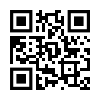

Interactive Arts: Seisiún
Musicians and audience share songs, jokes, and dances together in pubs.

Interactive Arts: Pansori
Singer and audience actively engage through 'chuimsae', blending song and gesture.

Broth Culture: Kimchi Jjigae
Jjigae and Gukbap are shared at the table as soul food to warm the body and build bonds.

Broth Culture: Irish Stew
Irish Stew and Coddle are classic comfort foods simmered to endure cold weather and bring families together.

History: Panmunjeon
Divided along the 38th parallel post-WWII, suffering from the tragic Korean War.

History: The Troubles
Divided following British colonial rule, suffering from the armed conflict known as 'The Troubles'.